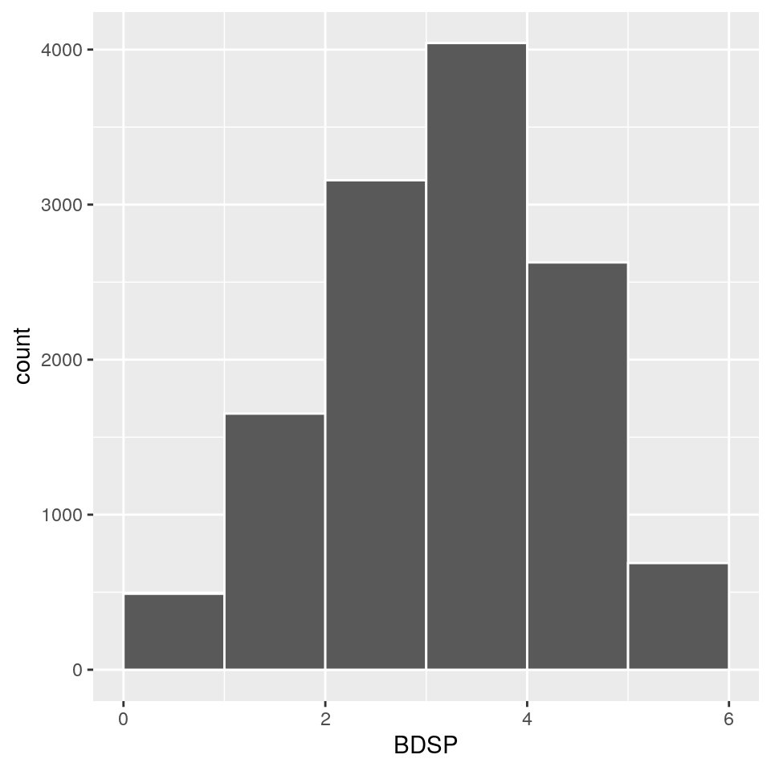

3 Describing distributions of variables
Statistics can give one a “bird’s eyes view” of the world. Or perhaps you’ve heard the phrase “seeing the forest from the trees”. We want the “larger” picture of what is going on in a variable. Somehow we want a bird’s eye view summary of what is happening with all the different values of a variable.
For example, suppose we have a variable about how anxious people are on a scale of 1–5. It would be nice to how much of the sample is distributed across the different values i.e. how many 1’s, 2’s, and so on… Hopefully most people are a 1 or 2 and not 5. If we want to talk about the larger picture of a variable, we discuss the distribution of that variable.
Knowing the distribution of a variable is important. We don’t want to rely on anecdotal evidence by focusing on a handful of occurrences.
There are two new libraries we will need to load, ggplot for graphing and knitr for making beautiful tables. Don’t also forget to load your recoded data.
library(dplyr) # For pipe and other data commands
library(janitor) # For tabyl
library(ggplot2) # For plotting using ggplot() function
library(knitr) # For making tables using kable()
library(stringr) # Needed for an example
load("~/Data/output/ACS_clean.RData")
knitr::opts_chunk$set(warning=FALSE,
message=FALSE,
fig.width=5,
fig.align="center") # No warnings3.1 Categorical Variables
The distribution of a categorical variable is described by the count or percentage (of the total) for each of the different values. This information is presented with a table. You can make a table with count or tabyl. I prefer the later since it automatically does percentages for you.
It’s common to also use the word frequency instead of count likewise relative frequency for percentage.
## new_RAC1P n percent
## White alone 16031 0.4498288344
## Black or African American alone 1739 0.0487962287
## American Indian alone 157 0.0044054100
## Alaska Native alone 4 0.0001122397
## American Indian 71 0.0019922555
## Asian alone 12456 0.3495145631
## Native Hawaiian and Other Pacific Islander alone 200 0.0056119872
## Some Other Race alone 2946 0.0826645715
## Two or more races 2034 0.0570739099If you live in the Bay Area, the results aren’t that surprising. The two largest categories are White and Asian alone respectively at 44% and 35% approximately. Mixed race people are at 5%. If you’re having difficulty reading the decimals as percentages use the adorn_pct_formatting command. Using the kable command also makes the table more visually appealing. I will use it for the remainder of the book.
| new_RAC1P | n | percent |
|---|---|---|
| White alone | 16031 | 45.0% |
| Black or African American alone | 1739 | 4.9% |
| American Indian alone | 157 | 0.4% |
| Alaska Native alone | 4 | 0.0% |
| American Indian | 71 | 0.2% |
| Asian alone | 12456 | 35.0% |
| Native Hawaiian and Other Pacific Islander alone | 200 | 0.6% |
| Some Other Race alone | 2946 | 8.3% |
| Two or more races | 2034 | 5.7% |
digits = 1 tells R to round at the first decimal place. If you want more or less precision change the number. Zero digits means a whole number. If you want to sort for smallest to largest (ascending order) use the arrange command. You have to tell R the variable by which to arrange/sort. Use the n variable which counts the occurrences of each value.
| new_RAC1P | n | percent |
|---|---|---|
| Alaska Native alone | 4 | 0.0% |
| American Indian | 71 | 0.2% |
| American Indian alone | 157 | 0.4% |
| Native Hawaiian and Other Pacific Islander alone | 200 | 0.6% |
| Black or African American alone | 1739 | 4.9% |
| Two or more races | 2034 | 5.7% |
| Some Other Race alone | 2946 | 8.3% |
| Asian alone | 12456 | 35.0% |
| White alone | 16031 | 45.0% |
3.1.1 Graphs
A graph makes it easy to compare the relative size of groups since you can see the difference. For example if one group is 30% and the other is 60%, you might not realize the larger is twice the size of the other until you think about it but it’s immediately apparent in a graph.
mydata_clean %>%
ggplot(aes(new_RAC1P)) +
geom_bar() +
ggtitle("Distribution of race variable") +
xlab("Race")Like always, the command starts with data and is then piped to another command. We will always use ggplot to graph something. Inside of the ggplot command is aes(), the aesthetic command, which tells ggplot what variable we want to graph, in this case new_RAC1P. There are then other commands which modify and specify what and how we want to graph the variable. ggplot uses + instead of the pipe to add more commands.
geom_bar()tellsggplotthat we want a bar graph of a categorical variable.ggtitlesets the title of the graph.xlabset the x-axis label.
Unfortunately it’s impossible to read the labels in the graph. You can fix this by turning the graph on its side with coord_flip and using a special function to make sure the descriptions aren’t too long using the str_wrap, string wrap, function. The 20 inside of str_wrap tells it to break up the words every 20 characters so the descriptions aren’t too long.
3.2 Numeric variables
The distributions of numeric variables are more complicated to describe than categorical variables. There are four major characteristics of numeric distributions.
- The shape of the distriution.
- Whether the distribution has outliers.
- The center of the distribution.
- The spread of the distribution.
3.2.1 Shape
Our primary tool for describing the shape of a numerical distribution is the histogram. The histogram bins a range of numeric values together and counts how many are in each bin. The histogram of the AGEP variable might be binned with a range of ten.
- All people between zero and ten (not including ten) would be counted. This bin would be called [0,10).
- All people between ten and twenth (not including twenty) would be counted. This bin would be called [10,20).
- And so on…
- Each bin would be as tall as the number of people in it.
Here is the distribution of the variable BDSP, number of bedrooms in a house, with bins of width one.
mydata_clean %>%
distinct(SERIALNO, BDSP) %>%
ggplot(aes(BDSP)) +
geom_histogram(binwidth=1,
boundary=0,
closed = c("left"),
color = "white")
The bins are one wide which means;
- The first bin counts everything in [0,1) i.e. it includes zero but not one;
- The first bin counts everything in [1,2) i.e. it includes one but not two;
- And so on…
We are interested in the tallest or most occurring bin. The graph shows that is the bin for two bedrooms with more than 10,000 occurrences. Let’s call this the “hightpoint” of the graph. The highpoint is approximately in the middle so this graph is symmetric.
Let’s look at the histogram of HINCP which is total household income over the last twelve months. I’ve decided on a bin width of 25,000 so we will bin incomes by increments of 25,000 dollars.
mydata_clean %>%
distinct(SERIALNO, HINCP) %>%
filter(!is.na(HINCP), HINCP >= 0) %>%
ggplot(aes(x=HINCP)) +
geom_histogram(aes(y=..density..),
binwidth = 50000,
boundary = 0,
closed = c("left"),
color = "white"
) +
geom_density(color="blue") +
xlab("Household income") +
ggtitle("Household income (HINCP)") +
scale_x_continuous(labels = scales::comma)If you look carefuly or zoom in, the tallest bin is the third bin which is [50000, 75000) but the whole graph seems to stretch all the way out to past two million. The high point is no longer in the middle. This graph is right skewed because the distance from the high point to the right side of the graph is longer than the high point to the left side of the graph.
There’s also a black line following the histogram. It is called a density curve. It smooths out the rectangular bins of the histogram. It also shows you how far the data goes when the bins are too small to see. The density curve ends a little past 2.5 million.
3.2.2 Outliers
Outliers are values that deviate significantly from the “norm”. They are small clumps of values (usually no more than a handful) that are isolated and “far away” from the rest of the values. It is easy to identify outliers by having R tell us how many values occurred in each bin.
Go back and add this code to where you generated your variables:
mydata_clean %>%
distinct(SERIALNO, HINCP, .keepall = TRUE) %>%
filter(!is.na(HINCP), HINCP >= 0) %>%
mutate(HINCP_binned = cut(HINCP,
breaks=seq(from=0,
to=2600000,
by=50000),
dig.lab=7,
right = FALSE
)) %>%
tabyl(HINCP_binned) %>%
adorn_pct_formatting(digits=3) %>%
kable()| HINCP_binned | n | percent |
|---|---|---|
| [0,50000) | 2660 | 21.028% |
| [50000,100000) | 2719 | 21.494% |
| [100000,150000) | 2188 | 17.296% |
| [150000,200000) | 1667 | 13.178% |
| [200000,250000) | 1157 | 9.146% |
| [250000,300000) | 714 | 5.644% |
| [300000,350000) | 409 | 3.233% |
| [350000,400000) | 295 | 2.332% |
| [400000,450000) | 166 | 1.312% |
| [450000,500000) | 85 | 0.672% |
| [500000,550000) | 57 | 0.451% |
| [550000,600000) | 201 | 1.589% |
| [600000,650000) | 79 | 0.625% |
| [650000,700000) | 57 | 0.451% |
| [700000,750000) | 57 | 0.451% |
| [750000,800000) | 35 | 0.277% |
| [800000,850000) | 30 | 0.237% |
| [850000,900000) | 11 | 0.087% |
| [900000,950000) | 11 | 0.087% |
| [950000,1000000) | 9 | 0.071% |
| [1000000,1050000) | 4 | 0.032% |
| [1050000,1100000) | 2 | 0.016% |
| [1100000,1150000) | 16 | 0.126% |
| [1150000,1200000) | 7 | 0.055% |
| [1200000,1250000) | 2 | 0.016% |
| [1250000,1300000) | 3 | 0.024% |
| [1300000,1350000) | 2 | 0.016% |
| [1350000,1400000) | 0 | 0.000% |
| [1400000,1450000) | 0 | 0.000% |
| [1450000,1500000) | 2 | 0.016% |
| [1500000,1550000) | 1 | 0.008% |
| [1550000,1600000) | 1 | 0.008% |
| [1600000,1650000) | 0 | 0.000% |
| [1650000,1700000) | 0 | 0.000% |
| [1700000,1750000) | 0 | 0.000% |
| [1750000,1800000) | 0 | 0.000% |
| [1800000,1850000) | 1 | 0.008% |
| [1850000,1900000) | 1 | 0.008% |
| [1900000,1950000) | 0 | 0.000% |
| [1950000,2000000) | 0 | 0.000% |
| [2000000,2050000) | 0 | 0.000% |
| [2050000,2100000) | 0 | 0.000% |
| [2100000,2150000) | 0 | 0.000% |
| [2150000,2200000) | 0 | 0.000% |
| [2200000,2250000) | 0 | 0.000% |
| [2250000,2300000) | 0 | 0.000% |
| [2300000,2350000) | 0 | 0.000% |
| [2350000,2400000) | 0 | 0.000% |
| [2400000,2450000) | 0 | 0.000% |
| [2450000,2500000) | 0 | 0.000% |
| [2500000,2550000) | 0 | 0.000% |
| [2550000,2600000) | 1 | 0.008% |
There are 1,406 households in the (50000,75000] bin. Down at the bottom is 1 household in the (2575000,2600000]. Not too surprisingly very few people make around 2.6 million. This household is an outlier because they’re the only household in that bin but more importantly there are about 20 empty bins between it and the next closest household in the (1875000,1900000] bin.
3.2.3 Center and Spread
Center and spread are numerical measures of the distribution. They are single numbers that attempt to describe a characteristic of the distribution.
- Center attempts to measure/describe a “typical” value in the distribution.
- Spread attempts to describe how far values “typically” deviate from the center.
There are many ways to describe what is “typical” (most common, in the middle, what the cool kids do, etc.) so there are many measures of center and so too for spread. We will have two ways to measure each. We will choose which to use depending on the shape of the distribution.
- If the distribution is symmetric: Mean and Standard Deviation as center and spread.
- If the distribution is skewed: Median and IQR.
3.2.3.1 Mean and Standard Deviation
The distribution of how much households pay for rent is fairly symmetric with a high point in the distribution between $1,500 and $2,000 according to the histogram. Note that the histogram is binned by $500 increments which I hope is reasonable. According to our rule, the “typical” value is determined by the mean.
mydata_clean %>%
distinct(SERIALNO, RNTP) %>%
ggplot(aes(x=RNTP)) +
geom_histogram(aes(y=..density..),
binwidth = 500,
boundary = 0,
closed = c("left"),
color = "white"
) +
geom_density()The mean is computed by adding all the values (in this case rents) and dividing by the number of values. It’s probably the “average” you learned in high school and grade school. The mean is called a “summary statistic”. It attempts to summarize a distribution. Use the summarize command to compute it. You need to include the na.rm=TRUE option to tell R to ignore anyone whose rent value is blank with NA for example people with a mortgage.
| mean |
|---|
| 2004.136 |
The “typical” person in the distribution pays $2,004 in rent which is literally pretty close to the center of the distribution hence the name.
Standard deviation is the mean of the square of the distance between all the values and the mean. Put more plainly it measures how far “typically” values are from the mean.
mydata_clean %>%
distinct(SERIALNO, RNTP) %>%
summarize(mean = mean(RNTP, na.rm=TRUE),
sd = sd(RNTP, na.rm=TRUE)) %>%
kable()| mean | sd |
|---|---|
| 2004.136 | 892.5093 |
The standard deviation is $893 which means that “typically” some one pays rent that is somewhere between $893 more or less than the “typical” rent of $2,004. It tells you how “spread” out the amount people pay for rent is, hence the name spread. If the standard deviation is small, it means most people pay around the same amount. For example if the the standard deviation was $100, typically rents are situated within two hundred dollars of the average.
We should also include the minimum and maximum values to round out the summary.
mydata_clean %>%
distinct(SERIALNO, RNTP) %>%
summarize(min = min(RNTP, na.rm=TRUE),
mean = mean(RNTP, na.rm=TRUE),
sd = sd(RNTP, na.rm=TRUE),
max = max(RNTP, na.rm=TRUE)) %>%
kable()| min | mean | sd | max |
|---|---|---|---|
| 4 | 2004.136 | 892.5093 | 3900 |
3.2.3.2 Median and IQR
We know that household income is not symmetric. It is right skewed. The mean cannot be used as a measure of center for the “typical” household’s income instead we use median.
The median is the “person in the middle”. If we were to line up everybody in Alameda and Santa Clara counties in order of lowest household income to largest household income, the income of the household in the middle of the line is the median of the distribution. This means that half of households are richer than the median and half are poorer.
mydata_clean %>%
distinct(SERIALNO, HINCP) %>%
summarize_at(vars(HINCP),
list(Min. = min,
Mean = mean,
Median = median,
Max. = max,
IQR = IQR),
na.rm=TRUE) %>%
kable()| Min. | Mean | Median | Max. | IQR |
|---|---|---|---|---|
| -4800 | 160302.7 | 120000 | 2580000 | 147150 |
The “middle” or “typical” household makes $120,000 in Alameda and Santa Clara counties. Half make less and half make more. This number is different than the mean which is about $160,000. Why the difference? The high earning outliers we saw earlier “pull up” the average earnings. The mean is always closer to the outliers than it is to the middle of the distribution which is why we use it for skewed distributions.
There five numbers to summarize the distribution.
- The minimum value of the distribution which in this case is -$4,800. Some household had negative earnings apparently.
- The 1st Quartile of the distribution. The 1st Quartile is the household income which 25% of households make less than.
- The *median of the distribution. This is the household income which 50% of households make less than.
- The 3rd Quartile of the distribution. This 3rd Quartile is the household income which 75% of households make less than.
- The maximum or the maximum of the “normal values”. Everything past the maximum or minimum is an outlier and shows up as a circle.
- The IQR measures how “spread out” the incomes of the middle 50% of households. They are spread out between 73575 above and below the median of 120,000.
mydata_clean %>%
distinct(SERIALNO, HINCP) %>%
summarize_at(vars(HINCP),
list(Min. = min,
"1st Qu." = ~quantile(., 0.25, na.rm=TRUE),
Mean = mean,
Median = median,
"3rd Qu." = ~quantile(., 0.75, na.rm=TRUE),
Max. = max,
IQR = IQR,
"n" = ~length(.)),
na.rm=TRUE) %>%
kable()| Min. | 1st Qu. | Mean | Median | 3rd Qu. | Max. | IQR | n |
|---|---|---|---|---|---|---|---|
| -4800 | 58500 | 160302.7 | 120000 | 205650 | 2580000 | 147150 | 14112 |
mydata_clean %>%
summarize_at(vars(PINCP),
list(Min. = min,
"1st Qu." = ~quantile(., 0.25, na.rm=TRUE),
Mean = mean,
Median = median,
"3rd Qu." = ~quantile(., 0.75, na.rm=TRUE),
Max. = max,
IQR = IQR,
"n" = ~length(.)),
na.rm=TRUE) %>%
kable()| Min. | 1st Qu. | Mean | Median | 3rd Qu. | Max. | IQR | n |
|---|---|---|---|---|---|---|---|
| -4800 | 8800 | 68777.9 | 36900 | 90000 | 1325300 | 81200 | 35638 |
The results:
- The lowest household income was negative.
- 25% of households made less than 56 thousand approximately.
- Half of households make less than 120 thousand.
- 75% of households make less than 205 thousand.
These numbers are displayed on a boxplot with vertical lines that form a box. The boxplot is also useful since it easy to see outliers. The dark line on the left is the median at $120,000. The circles off on the right are probable outliers past the “normal maximum” of about 500 thousand.